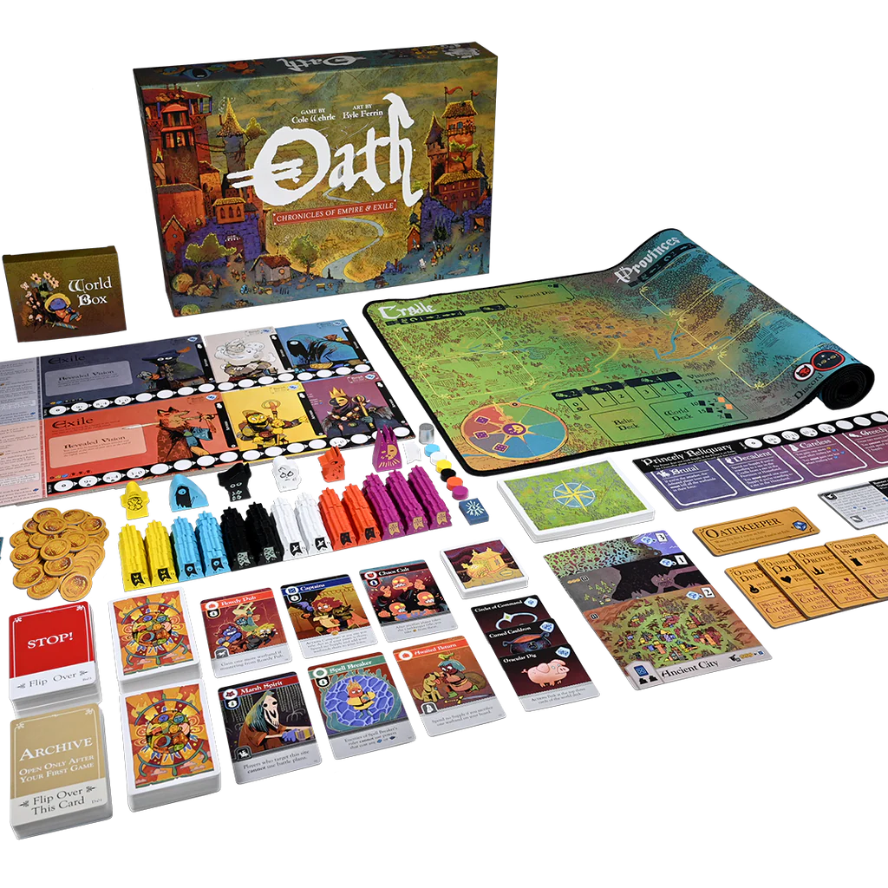
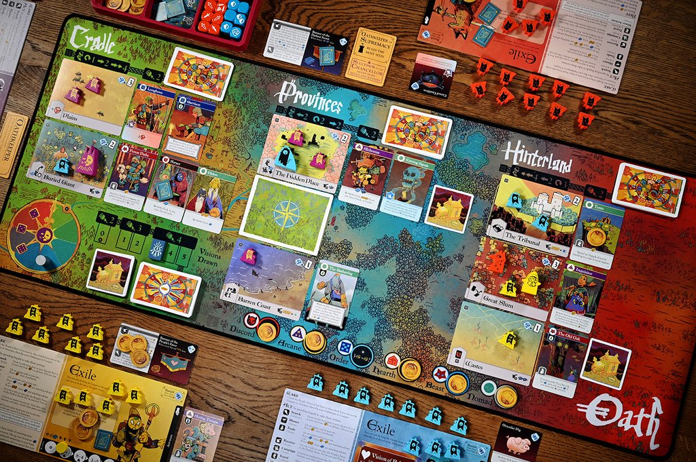
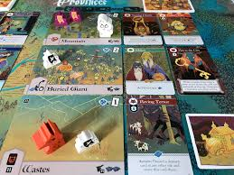

Czym jest Oath?
Oath to zdecydowanie najbardziej skomplikowana gra z wymienionych tytułów, ale to właśnie jej złożoność sprawia, że jest tak fascynująca. Gra ma unikalny system, który „zapamiętuje” przebieg poprzednich partii, w tym kto odniósł zwycięstwo, co ma znaczący wpływ na kolejne rozgrywki. W praktyce oznacza to, że każda kolejna gra nie jest odrębną, niezależną partią, lecz jest bezpośrednio związana z historią wcześniejszych wydarzeń. Wyniki poprzednich rozgrywek zmieniają układ polityczny świata gry, dostępność zasobów oraz wpływają na to, jakie cele mogą być realizowane w kolejnych sesjach.
Dlaczego jest ciekawa?
Oath oferuje wyjątkowy system walki, który jest zarówno taktyczny, jak i emocjonujący, wymagający od graczy przemyślanych decyzji oraz odpowiedniego wykorzystania dostępnych zasobów. Równie interesujący jest system zdobywania kart, który dodaje warstwę strategicznego planowania, a jednocześnie wpływa na narrację przyszłych rozgrywek, ponieważ gra „zapamiętuje” wydarzenia z poprzednich partii. Często podczas gry priorytetem staje się nie tyle zwycięstwo, co tworzenie fascynującej historii, która sprawi, że kolejne partie będą jeszcze bardziej angażujące. Ten element ciągłości między rozgrywkami sprawia, że każda gra staje się częścią większej opowieści, a decyzje z przeszłości wpływają na przyszłe wydarzenia. Właśnie to budowanie długofalowej narracji sprawia, że gra Oath wyróżnia się na tle innych gier planszowych.
Czy polecam początkującym graczom?
Zdecydowanie nie zaczynaj od Oath, ponieważ jej złożoność może być przytłaczająca dla nowych graczy. Najpierw warto zapoznać się z prostszymi grami, takimi jak Catan czy Ryzyko, aby nabrać doświadczenia i zrozumieć podstawowe mechaniki planszówek. Kiedy już opanujesz te tytuły, przysiądź do Oath – obiecuję, że będzie to wyjątkowe i satysfakcjonujące doświadczenie, które wynagrodzi ci czas spędzony na nauce wcześniejszych gier.